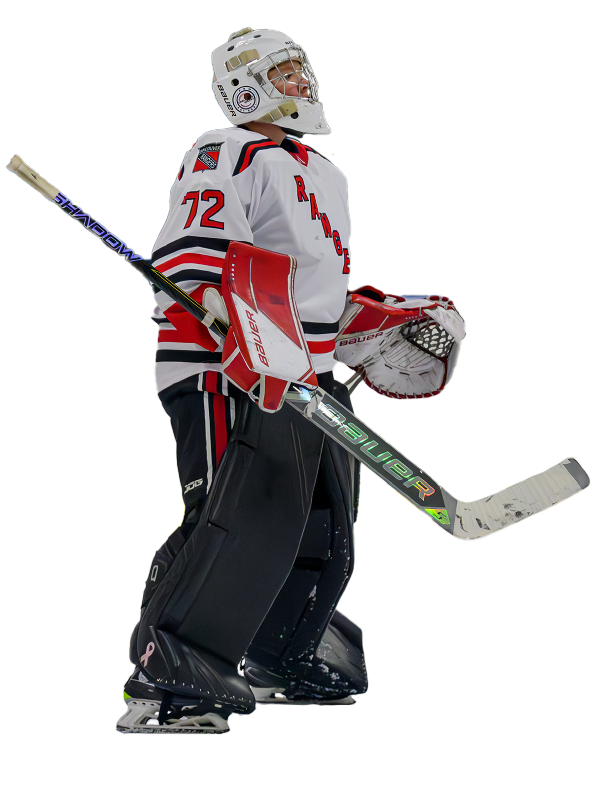

.png)
I'm Ethan Smith — a designer and aspiring entrepreneur passionate about solving real-world problems. I blend empathy, rapid prototyping, and business strategy to build a multitude of solutions.

The quintessential thought leader, the Catalyst is what John F. Kennedy called “an idealist without illusions.” Your expansive vision is grounded in rigorous thought, rooted in an honest assessment of the problems at hand. While you see clearly what’s not working, your real passion lies in discovering what does work.


We took on a poster that aimed to capture the essence of the school's spirit and values through vibrant visuals and engaging content.
Images and Layout of the first prototype were enjoyed, and the footer of our second prototype was implemented into the final design.
Ms. Zatezalo wanted a logo that reflected the essence of her writing tutoring class, emphasizing creativity and professionalism.
3 logos were delivered to the class, and the 1st logo was selected by the students to be implemented.
To effectively solve problems using design thinking, first build empathy by walking in the user's shoes to clearly define the challenge. From there, brainstorm a wide range of ideas, turn them into tangible prototypes, and test them with real students or clients to get feedback.
While empathy means stepping into someone's shoes to share their emotional experience, sympathy means observing their pain from a distance and feeling sorry for them.
Ms. Defazio emphasized the importance of targeting the major food groups, and providing healthy meal options for all students. She also mentioned how important it is to consider dietary restrictions and preferences in the meal planning process.
The majority of preferred meals were fried, which included country fried steak, chicken and waffle, and korean wings.
View Survey ResultsThe kitchen staff were very grateful for the feedback from the students. They are excited to implement the suggestions and improve the dining experience.

Final poster design iteration blending vibrant school branding with student feedback on layout and footers.
Final logo design for Ms. Zatezalo's writing class, incorporating student feedback and preferences.

Highlights from the final presentation given to kitchen staff detailing student dorm dinner preferences.